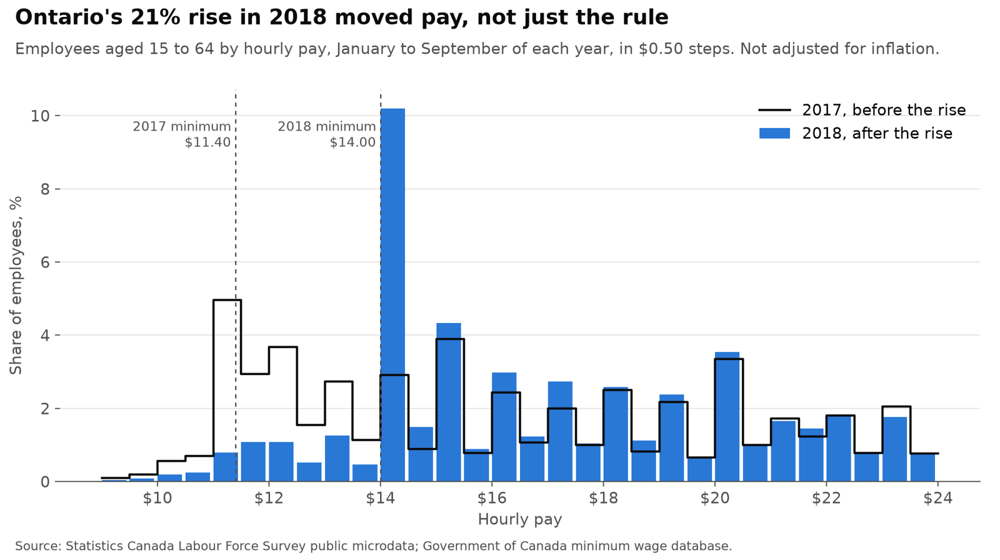
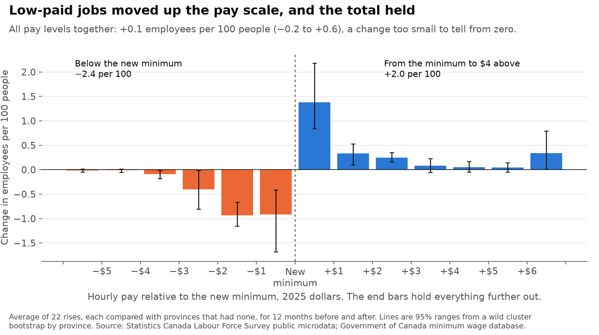
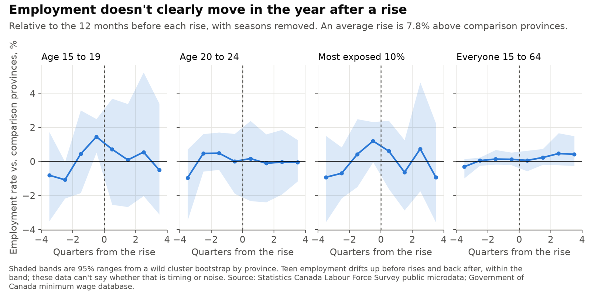
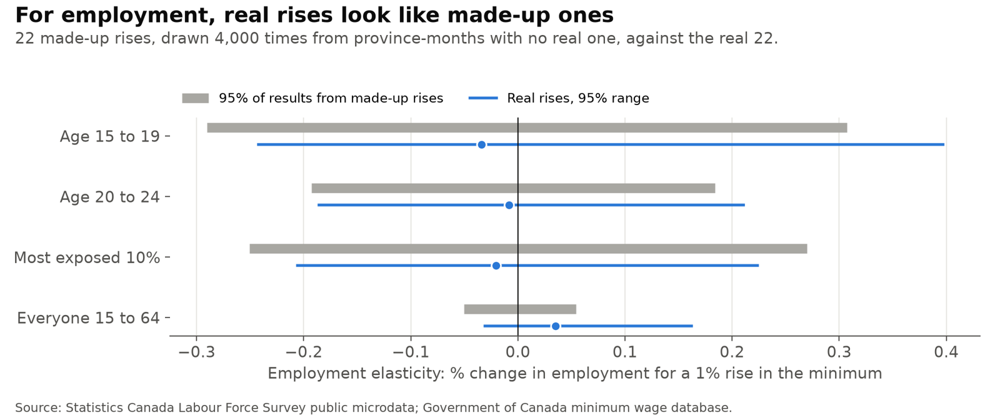
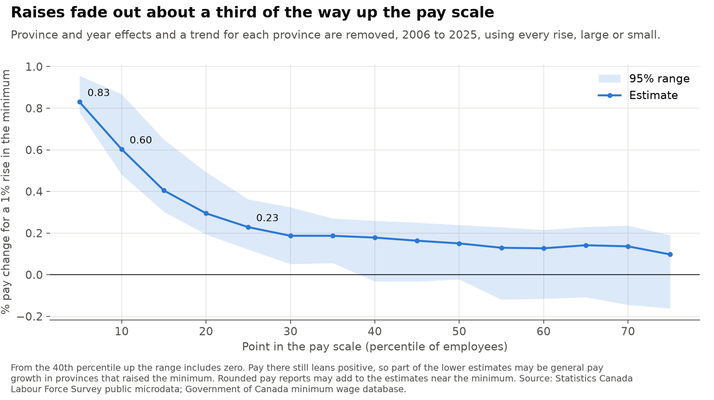
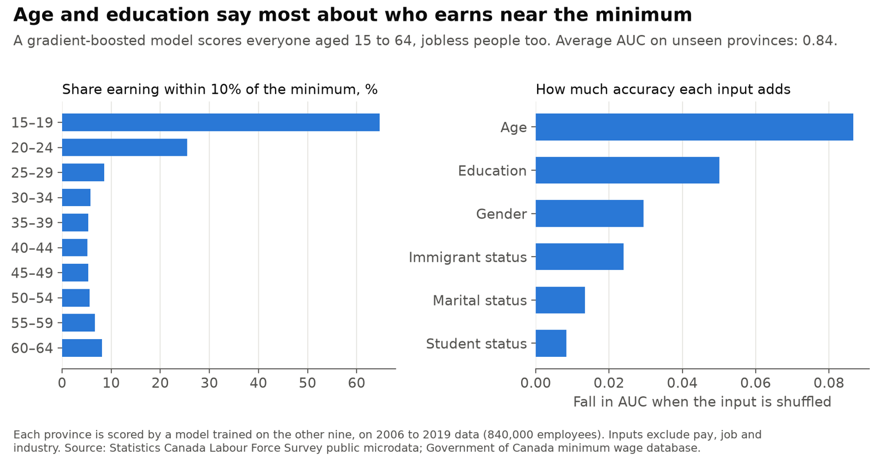
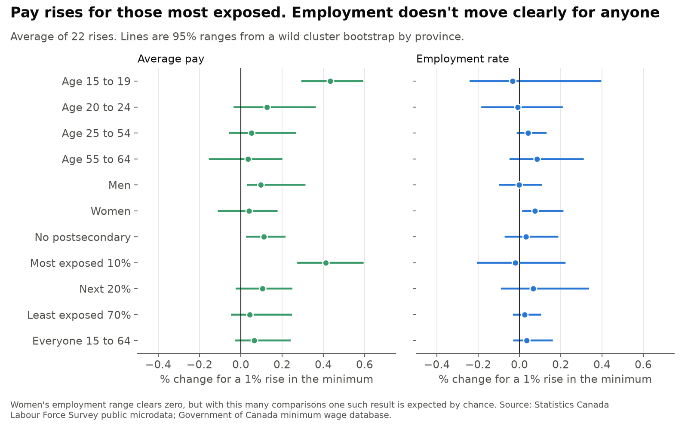

What minimum wage rises did to pay and jobs in Canada since 2006
Provinces have raised their minimum wages at different times, which makes each rise a natural experiment. This project follows 20 million survey records of people aged 15 to 64, from 2006 to September 2026, to see what happened to pay and jobs.
Personal project: my own analysis of publicly available data. It is not associated with my work for any current or past employer and does not represent their views.
At a glance
| Question | Methods | Answer |
|---|---|---|
| Where do low-paid jobs go? | Bunching estimator, stacked difference-in-differences | Up the pay scale. Jobs below the new minimum fall by 2.4 per 100 people; total employees change by +0.1 (−0.2 to +0.6). |
| Do jobs and hours fall? | Event study, wild cluster bootstrap, placebo rises | No clear change. A 10% rise moves teen employment by −0.3% (−2.4% to +4.0%). |
| How far up do raises reach? | Percentile panel with province trends | About a third of the way. A 1% rise lifts pay 0.83% at the 5th percentile, 0.60% at the 10th and 0.23% at the 25th. |
| Who is affected most? | Gradient boosting on demographics, subgroup estimates | The most exposed 10%, nearly all under 25: pay up 4.1% per 10% rise, employment −0.2% (−2.1% to +2.2%). |
Explore the pay distribution
Hover or tap a bar for its share. Pay is in current dollars, for employees aged 15 to 64. Small provinces are noisier. Spikes at round numbers are how people report their pay.
The minimum after inflation
The province chosen above is in blue, and dots mark its rises in this study. Hover or tap a line for its value.
1. Where do low-paid jobs go?
Each rise pays at least 4% more after inflation over the following 12 months than over the previous 12, and is compared with provinces whose minimum rose less than 3%. An average rise is 7.8% above those provinces.

Ontario's jump from $11.60 to $14.00 in January 2018 is the clearest case. Compared with provinces that had no large rise, jobs below the new minimum fell by 7.3 per 100 people aged 15 to 64, jobs from the minimum to $4 above rose by 5.4, and all employees together changed by −0.1.

Across all 22 rises, jobs below the new minimum fell by 2.37 per 100 people (1.77 to 3.25) and jobs from the minimum to $4 above rose by 2.04 (1.50 to 2.84). That is 86% of the jobs lost below. The other 0.33 per 100 is not simply gone: pay further up rose by 0.44 (0.08 to 0.92), and all employees together changed by +0.11 (−0.20 to +0.57). This window can't say whether those higher jobs are the same workers or just pay growth, so the total is the number to rely on.
2. Do jobs and hours fall?

An elasticity of −0.03 for teens (−0.24 to 0.40) means a 10% rise changes teen employment by −0.3%, with a 95% range of −2.4% to +4.0%. For ages 20 to 24 it is −0.01 (−0.19 to 0.21), and for everyone aged 15 to 64 0.03 (−0.03 to 0.16). Teen hours per person: −0.06 (−0.31 to 0.58). Jobs in accommodation and food: −0.05 (−0.45 to 0.38). Retail: 0.04 (−0.25 to 0.43).

To test the method, I drew 22 made-up rises from province-months with no real one, 4,000 times. For teens, 95% of those results fall between −0.29 and 0.31, so a real effect smaller than about that can't be told apart from noise. Using only the 10 rises of at least 6% gives −0.15 for teens (−0.40 to 0.29), and an annual panel using every rise gives −0.09 (−0.49 to 0.39). These data rule out large teen job losses, but not small ones.
3. How far up do raises reach?

A 1% higher minimum lifts pay by 0.83% at the 5th percentile (0.78 to 0.96), 0.60% at the 10th (0.48 to 0.87) and 0.23% at the 25th (0.12 to 0.36). From the 40th percentile the range includes zero. The flat 0.13 to 0.14 near the top suggests that part of the lower numbers is general pay growth in the same provinces, not the minimum itself.
4. Who is affected most?

People without a job have no pay to measure, so looking only at low-paid workers would miss anyone who lost a job. A model trained on demographics alone scores everyone aged 15 to 64 on how likely they are to earn near the minimum, including those not working. Each province is scored by a model trained on the other nine. The most exposed 10% turn out to be 84% teens and 14% aged 20 to 24, so here the model mostly confirms what age already says.

The most exposed 10% see average pay rise 0.41% per 1% rise (0.27 to 0.59), close to teens at 0.43% (0.29 to 0.59). Their employment moves by −0.02 (−0.21 to 0.22) and hours per person by −0.10 (−0.32 to 0.24). Women's employment is the one range clear of zero, but among this many comparisons one such result is expected by chance.
The 22 rises
| Province | First month | Average rate, 12 months before and after | Below new minimum | Minimum to $4 above | All employees |
|---|---|---|---|---|---|
| Alberta | Sep 2011 | $8.80 to $9.40 | −0.5 | +1.0 | +1.4 |
| Alberta | Oct 2015 | $10.20 to $11.20 | −0.7 | +0.8 | −2.0 |
| Alberta | Oct 2016 | $11.20 to $12.20 | −1.3 | +1.5 | −0.4 |
| Alberta | Oct 2017 | $12.20 to $13.60 | −2.1 | +1.0 | +0.4 |
| Alberta | Oct 2018 | $13.60 to $15.00 | −3.1 | +2.7 | +0.0 |
| British Columbia | Nov 2011 | $8.38 to $9.88 | −1.3 | +1.5 | +0.5 |
| British Columbia | Jun 2018 | $11.22 to $12.65 | −3.5 | +2.8 | −0.1 |
| New Brunswick | Jan 2007 | $6.60 to $7.12 | −1.0 | +0.7 | +0.2 |
| New Brunswick | Apr 2010 | $8.15 to $8.79 | −2.2 | +1.6 | −1.2 |
| New Brunswick | Apr 2011 | $8.79 to $9.79 | −1.9 | +2.2 | −0.5 |
| Newfoundland and Labrador | Jan 2007 | $6.65 to $7.12 | −1.4 | +0.9 | +1.0 |
| Newfoundland and Labrador | Jan 2010 | $8.75 to $9.75 | −4.3 | +4.5 | +1.8 |
| Nova Scotia | Apr 2010 | $8.60 to $9.43 | −4.0 | +3.6 | +0.6 |
| Nova Scotia | Oct 2025 | $15.45 to $16.62 | −1.8 | +1.0 | −0.4 |
| Ontario | Apr 2010 | $9.50 to $10.25 | −2.5 | +2.8 | +1.1 |
| Ontario | Jun 2014 | $10.25 to $11.00 | −1.7 | +1.9 | +0.1 |
| Ontario | Jan 2018 | $11.45 to $14.00 | −7.3 | +5.4 | −0.1 |
| Prince Edward Island | Jun 2010 | $8.33 to $8.90 | −2.6 | +1.3 | −0.4 |
| Prince Edward Island | Oct 2011 | $9.10 to $9.80 | −3.3 | +3.3 | +0.9 |
| Quebec | May 2018 | $11.25 to $12.00 | −3.1 | +2.9 | +0.1 |
| Saskatchewan | Dec 2012 | $9.50 to $10.00 | −0.9 | +0.3 | −0.3 |
| Saskatchewan | Oct 2024 | $14.00 to $15.00 | −1.8 | +1.3 | −0.0 |
Changes are employees per 100 people aged 15 to 64, against comparison provinces. Single rises are noisy, especially in small provinces.
How it works
The survey has no person identifier, so these are repeated samples of people, not the same people followed over time. Each rise compares the 12 months before with the 12 months after, against the average of provinces without a large rise. With about ten provinces, ordinary clustered errors are far too narrow, so ranges come from a wild cluster bootstrap with Webb weights, inverted into a 95% range.
Rises whose window touches March 2020 to December 2021 are dropped. So are rises with fewer than two clean comparison provinces, which leaves Manitoba with no rise of its own in the study and thins out 2008-2010, when many provinces moved at once.
Limits
- Twelve months is short. Jobs that adjust over several years, through fewer new businesses or more automation, won't show up here.
- Comparison provinces overlap across rises, and a province can hit its own shock at the same time. Alberta's rises came alongside the 2015-16 oil slump, though dropping Alberta leaves the result about the same.
- Pay is self-reported and often rounded. Lower legal rates for students and, in some provinces, liquor servers mean some reported pay below the minimum is legal.
- Provinces raise the minimum when they choose to, often in good times. Province trends help but don't remove this.
- Teen employment drifts up before rises and back after. It stays inside the range, but with these data I can't tell if that is timing or noise.
Data
Statistics Canada Labour Force Survey public use microdata files, 2006 to September 2026; consumer price index table 18-10-0004-01; general hourly minimum wage rates from the Government of Canada's minimum wage database, with five missing flags and one date typo corrected.
Adapted from Statistics Canada; this does not constitute an endorsement by Statistics Canada of this product. Contains information licensed under the Open Government Licence - Canada.